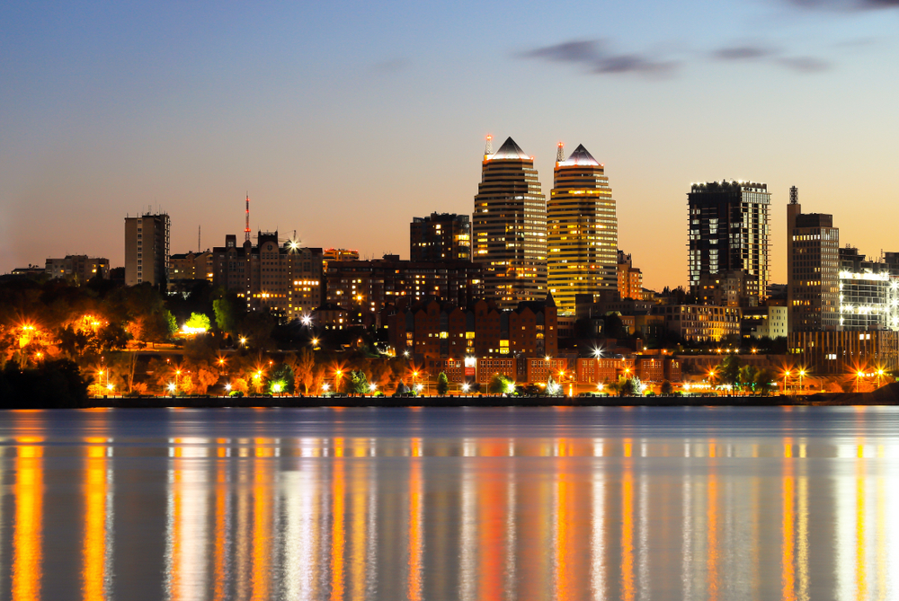

🌊 вода
Набережна + кава + захід сонця
Ідеально на 2–3 години: прогулянка вздовж води, коротка зупинка на каву та фото на золотій годині.
Короткі міські мандрівки без зайвої метушні: обери настрій (вода, архітектура або зелень) і отримай готовий план прогулянки з точками для фото та паузами на відпочинок.

Перевір погоду → вдягни зручне взуття → візьми воду та заряд → і вирушай. У маршрутах є короткі підказки, де зробити паузу і що не пропустити.

Ідеально на 2–3 години: прогулянка вздовж води, коротка зупинка на каву та фото на золотій годині.

Маршрут для тих, хто любить деталі: фасади, дворики, цікаві точки та “міські легенди”.

Зелені локації для відпочинку: прогулянка, лавка, нотатки, фото деталей природи.
Ранок — для спокійних кадрів і порожніх вулиць. Вечір — для заходу сонця та ліхтарів. Після дощу місто стає “дзеркальним” — ідеально для фото.
Якщо хочеться руху — обирай набережну. Якщо тягне на атмосферу — центр і дворики. Якщо треба “видихнути” — парк і тиша. Усі варіанти розраховані на 2–3 години.